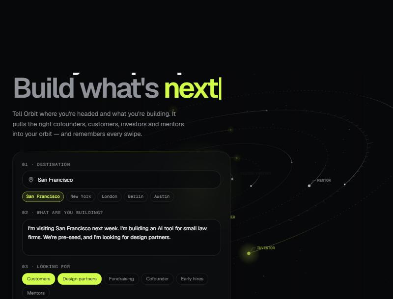
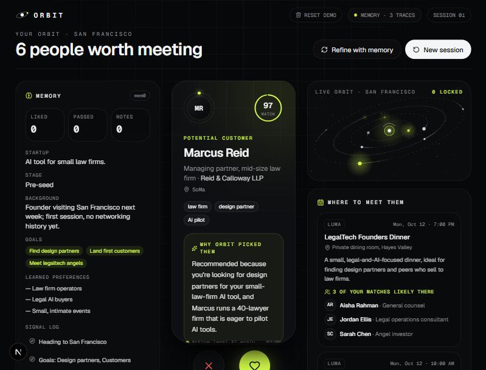
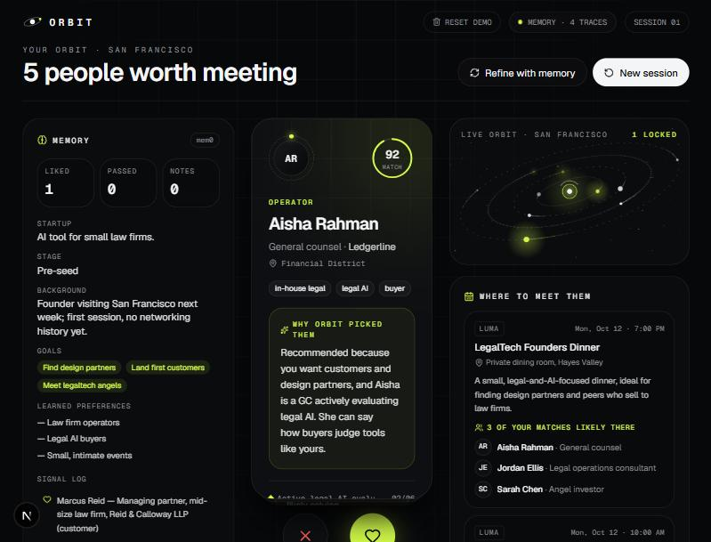
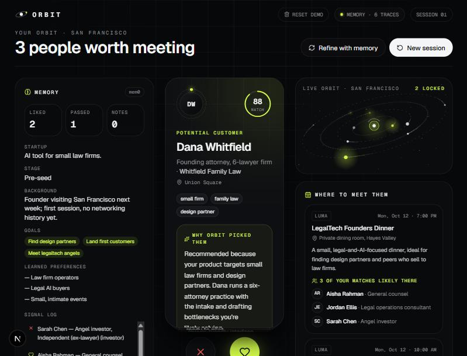
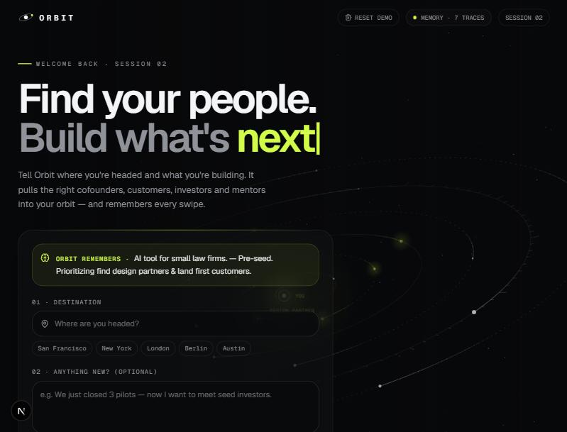
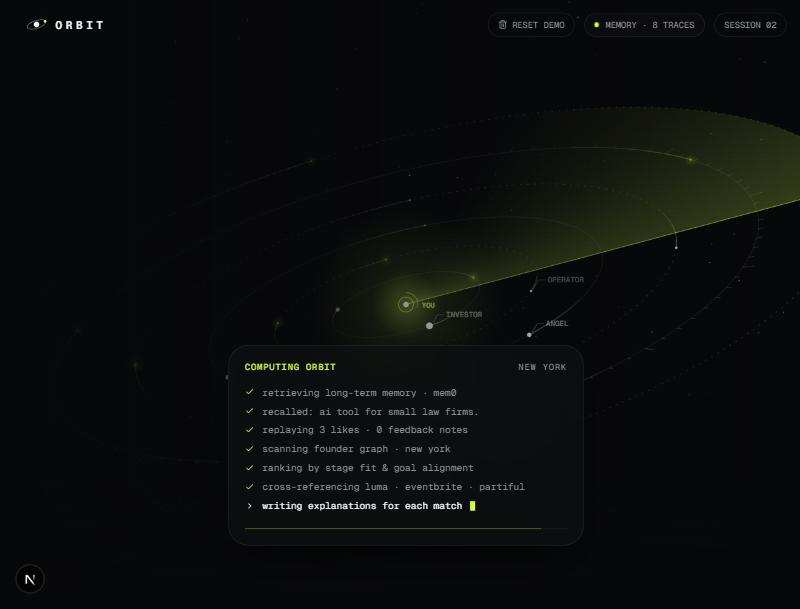
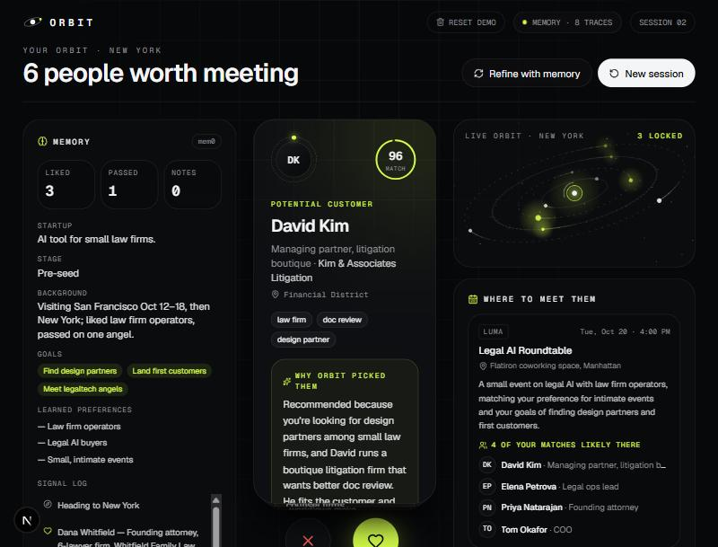

Orbit: demo walkthrough
A founder plans a trip to San Francisco, swipes on people, then plans a trip to New York. Orbit remembers them in between, via mem0. Screens captured from the running app.
Intake: where are you going, what are you building?
The founder picks a city, describes the company and chooses goals. Load demo founder pre-fills San Francisco, an AI tool for small law firms, and the goals Design partners + Customers.

components/orbit/intake.tsxSession 1: six people and three events for San Francisco
Launch orbit calls POST /api/recommend. The backend stores the brief in mem0, asks Claude for 6 people and 3 events (seeded local people from seed.json plus invented personas), and returns a "why" for each card. The Memory panel on the left shows the extracted profile: startup, stage, goals and learned preferences.

recommend() in backend/main.py · Frontend: swipe-deck.tsx, memory-panel.tsx, events-panel.tsxSwipe right to connect, left to pass
Each swipe sends POST /api/swipe. The backend turns it into a sentence such as "User liked (swiped right on) Marcus Reid, a Managing partner…" and writes it to mem0 in a background task, so the UI never waits. The Liked counter and the signal log update right away.

Build up signal
Two likes (law-firm partner, general counsel) and one pass (an angel investor). The signal log on the left records each one. A feedback note ("Prefer small dinners over big mixers") goes through POST /api/feedback the same way.

Session 2: "Welcome back"
Click New session. The intake now says "Welcome back · session 02" and an Orbit remembers box shows the startup, stage and goals. The founder is not asked who they are again. This comes from GET /api/memory, so it survives a page reload.

get_memory() reads mem0 plus state.json (profile, cities, session count)Orbit recalls memory before ranking
Choose New York and launch. The scanning screen shows the steps: retrieving long-term memory from mem0, recalling the profile, replaying 3 likes, then ranking by stage fit and goal alignment.

recall() searches (profile, liked, skipped) are put into the Claude prompt · Frontend: scanning.tsxThe payoff: a New York deck shaped by San Francisco swipes
With no brief typed, the top card is David Kim, a litigation-boutique managing partner (96 match), and the events are small and legal-focused: the Legal AI Roundtable lists four likely attendees from the deck. The Memory panel now says "Visiting San Francisco Oct 12-18, then New York; liked law firm operators, passed on one angel."

How it fits together
Frontend (Next.js): orbit-app.tsx holds the flow, and /api/* is proxied to the backend in next.config.mjs.
Backend (FastAPI): /api/recommend, /api/swipe, /api/feedback, /api/memory (GET and DELETE).
Memory: mem0 stores facts per user_id; state.json keeps the profile and visited cities.
LLM: Claude builds the deck as JSON from the memory facts, liked and skipped lists, and the seed data.